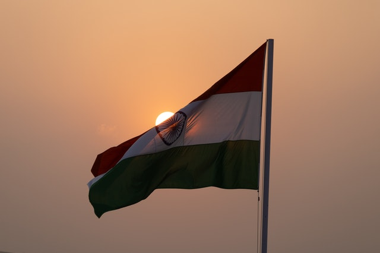
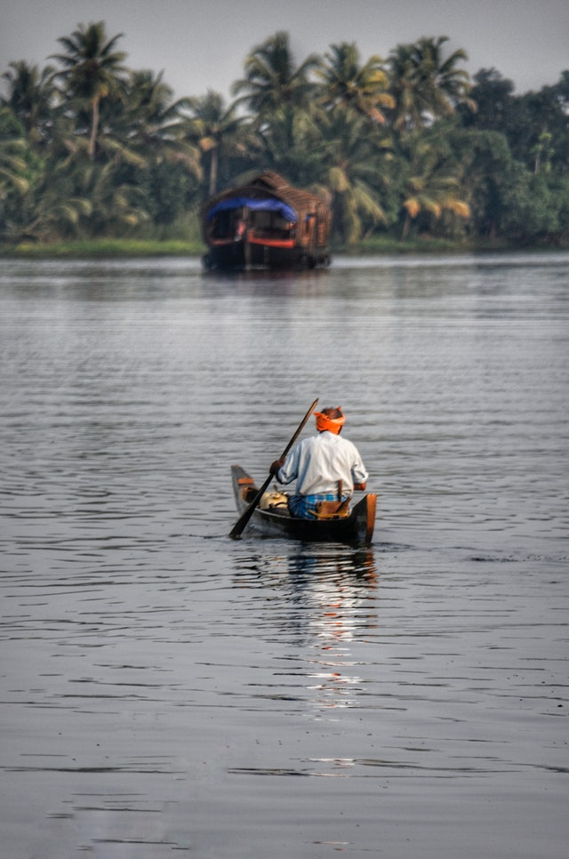
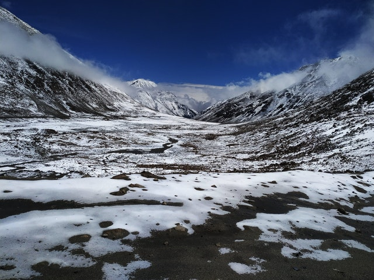

Peace
for life
Tour
Welcome to Peace tour for life
Guided Tours through Peace Tour are immersive excursions with authentic experiences that highlight the local culture. Enjoy the world’s iconic attractions with VIP passes, hotels, and transportation taken care of, plus get under-the-radar insights, not typically available to independent travelers. Whether you’re traveling solo, with adults-only or with family, Liberty Travel will match you up with a professional guide who’ll personalize your vacation with a range of fascinating and unique experiences that really bring each destination to life.
|
|

|

|
| Travel |
In & Around |
India |
We come together each day to fulfill a promise of offering the single most comprehensive travel experience to users
kerala
Kerala, a state on India's tropical Malabar Coast, has nearly 600km of Arabian Sea shoreline. It's known for its palm-lined beaches and backwaters, a network of canals. Inland are the Western Ghats, mountains whose slopes support tea, coffee and spice plantations as well as wildlife. National parks like Eravikulam and Periyar, plus Wayanad and other sanctuaries, are home to elephants, langur monkeys and tigers
|

|

|
|
|
| fishing |
tradition |
Boat House |
Nature |
Kerala is famous for its unique geography, tranquil backwaters, unspoiled beaches, art forms and spices. It is also famous for its charming houseboats, sprawling tea plantations, unique eco-tourism, magnificent architecture, Ayurvedic treatments and unforgettable culinary experiences
Rajasthan
Rajasthan is a state in northern India. It covers 342,239 square kilometres or 10.4 percent of India's total geographical area. It is the largest Indian state by area and the seventh largest by population.
|
|
|
|
|
| Siting |
History |
Fort |
Beauty |
HomeAbout Rajasthan
About Rajasthan
Rajasthan ‘Land of Kings’ or ‘Land of Kingdom’ is India’s largest state by area. The state located on northwest part of country and is a home of cultural diversity. Its features include the ruins of Indus Valley Civilization, Temples, Forts and Fortresses in almost every city. Rajasthan divided into 9 regions; Ajmer State, Hadoti, Dhundhar, Gorwar, Shekhawati, Mewar, Marwar, Vagad and Mewat which are equally rich in its heritage and artistic contribution. These regions have a parallel history which goes along with that of the state.
Leh Ladakh
Ladakh is most famous for breathtaking landscapes, the crystal clear skies, the highest mountain passes, thrilling adventure activities, Buddhist Monasteries and festivals.
|

|
|
|
|
| Mountains covered by Snow |
mountain reflecting in River |
Clouds & Snow touching together |
Bikers Lovable Spot |
Ladakh ("land of high passes") is a region in northern India. It is located between the Kunlun mountain range in the north and the main Himalayas to the south. Ladakh is well-known for its remote mountain scenery. It is inhabited by a mix of Indo-Aryan and Tibetan people.